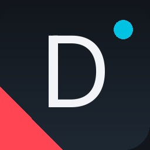

Explora proyectos independientes, gestores de homebrew y utilidades creadas con ritmo vibecoding, combinando arquitectura de bajo nivel en C++, automatización moderna y amor por la preservación de videojuegos.

Gestor nativo en C++ / SDL2 de Ports, Decomps y Recomps
Una reimplementación nativa inspirada en el estándar de Quiver Launcher diseñada específicamente para Horizon OS (Nintendo Switch). Te permite instalar, organizar, verificar y actualizar ports legendarios de N64, PS1, PC, Arcade y más, con carátulas automáticas y sin fricción.
Estrategia híbrida de miniaturas usando Libretro Thumbnails y SteamGridDB.
Garantiza integridad de ROMs y archivos requeridos (.otr, .o2r, iso_data).
Ship of Harkinian, 2Ship, Ghostship, Banjo, Jak & Daxter, etc.
Construido para libnx, soporta modo applet y memoria completa (Title Override).
sdmc:/ ├── roms/ │ ├── n64/ # OoT, MM, SM64, DKR │ ├── ps1/ # Driver 2, Silent Hill │ └── arcade/ # Daytona USA └── switch/ ├── Delanx/ │ ├── Delanx.nro │ └── cache/ # Miniaturas $0 ├── shipofharkinian/ └── 2ship2harkinian/
Compatible bidireccionalmente con el ecosistema de Quiver Launcher para compartir bibliotecas sin perder compatibilidad en PC.
Desarrollados bajo la metodología de software rápido y asistido por IA (vibecoding), auditados para estabilidad y publicados con licencias libres.
Gestor y launcher nativo en C++ para Nintendo Switch de puertos, decompilaciones y recomps con catálogo verificado de más de 45 juegos.
Catálogo maestro con especificaciones de rutas, miniaturas híbridas ($0 costo en Libretro / SteamGridDB) y verificaciones de ROMs.
Nuevos scripts, sincronizadores de partidas entre PC y consola (estilo Moonlight/Sunshine), y automatizaciones para gaming retro en camino.
Aquí no hay laboratorios corporativos: soy un entusiasta construyendo y probando directamente en mi propia Nintendo Switch en casa. Con la ayuda de agentes de IA para acelerar la programación en C++, transformo ideas en homebrew funcional para disfrutarlo en la consola.